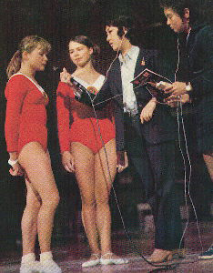

Nina Dronova (USSR)
1971 and 1974 Chunichi Cup AA Champion
1974 World Team Gold Medalist

Dronova (left) and Turischeva are interviewed after the 1971 Chunichi Cup.
Medal Total
World Championships: 1 Gold
Dronova was born in Tbilisi, Georgia in 1958. When she was 7, she was accepted into the gymnastics section at Gantiadi Tbilisi. Eight months later, her father died, leaving a young wife to care for 3 daughters. Nina's coaches, Sergo Burdzhanadze and V. Klimova, became her second parents. In 1969, they took her to Moscow to watch the gymnastics competitions at the IV Spartakiade. When she got back to Tbilisi, she taught herself the Burda twirl on UB.
She became a master of sport at age 11, and a year later she was included in a "top 10" list of Georgian athletes. She also appeared briefly in the documentary film "Sport, Sport, Sport." In 1971, she won 5 gold medals (and scored a 10 on FX) at the USSR Jr. Spartakiade. Her AA total of 38.95 beat the AA score of Tamara Lazakovich, winner of the USSR Sr. Spartakiade, by more than two-tenths. She wrapped up 1971 by winning the Druzhba competition and the Chunichi Cup.
Originally slated to compete at the 1972 Olympics, Nina suddenly became the alternate after she contracted a serious case of food poisoning at the final training camp in Moscow a few days before the start of the Games. She was a member of the gold-medal Soviet team at the 1974 Worlds and won the Chunichi Cup and Champions All meets that year, as well. She competed domestically in 1976 but was never a contender for Montreal.
After leaving competitive gymnastics, Dronova graduated from the Tbilisi Institute of Physical Culture and became a coach and choreographer. She married Gennady Dzhamaspishvili and their daughter, Natasha, is a doctor in Tbilisi. Dronova now lives in the USA.
Competition Results
1967
Schoolchildren's Spartakiade: 1st AA
1969
Tbilisi City Championships: 1st AA (First Class, Junior)
1970
All-Union Original Elements Competition: 1st UB
All-Union Youth Championships: 2nd AA, 1st V, 1st UB, 1st FX
Georgian SSR-HUN Dual Meet: 1st Team, 1st AA, 1st UB, 2nd B
Jr. Friendship Tournament (Druzhba): 1st Team, 4th AA, 1st UB, 6th FX
Specialized Sports Schools Championships: 1st AA
1971
All-Union Original Elements Competition: 1st FX, 2nd UB
Chunichi Cup: 1st AA
Georgian Spartakiad: 1st AA, 1st V, 1st UB, 1st B, 1st FX (Junior)
Georgian SSR-HUN Dual Meet: 1st Team, 1st AA
JPN-URS Dual Meet: 1st Team, 3rd AA, 1st V, 2nd UB, 2nd FX
Jr. Friendship Tournament (Druzhba): 1st Team, 1st AA, 1st UB, 1st B, 1st
FX, 2nd V
Jr. USSR Spartakiade: 1st AA, 1st V, 1st UB, 1st B, 1st FX
Prize of the Georgian Komsomol: 1st Team, 1st AA
Riga International: 5th AA, 1st UB, 1st FX, 2nd V
Tbilisi Spartakiad: 1st AA
1972
Chunichi Cup: 2nd AA
Georgian Youth Games: 1st Team, 1st AA
HUN-Georgian SSR Dual Meet: 1st Team, 3rd AA, 1st V, 2nd FX, 3rd B
Jr. Friendship Tournament (Druzhba): 1st Team, 1st AA, 1st UB, 1st B,
1st FX, 2nd V
Transcaucasian Friendly Sports Games: 1st Team, 1st AA, 1st UB 1st B, 1st FX
1973
All-Union Youth Sports Games: 2nd AA, 1st V, 3rd B
Jr. Friendship Tournament (Druzhba): 1st Team, 1st FX, 3rd V, 5th B
USSR Championships: 2nd B, 3rd FX, 6th V
USSR Cup: 6th AA
1974
Champions All: 1st AA
Chunichi Cup: 1st AA
USSR Championships: 4th UB, 6th V
USSR Cup: 5th AA
World Championships: 1st Team, 7th AA, 4th B, 5th FX
1975
Riga International: 1st AA, 1st V, 1st UB, 2nd B, 2nd FX
USSR-GDR Dual Meet: 1st Team, 3rd AA
World Cup: 7th AA, 4th B, 6th UB, 6th FX
1976
All-Union Summer Student Games: 2nd AA
Georgian Cup: 1st AA
USSR Championships: 7th AA, 4th UB
USSR Cup: 10th AA
1977 This page was created on December
20, 2000 and was last updated on October 16, 2026.
Georgian Championships: 1st AA
© Gymn Forum